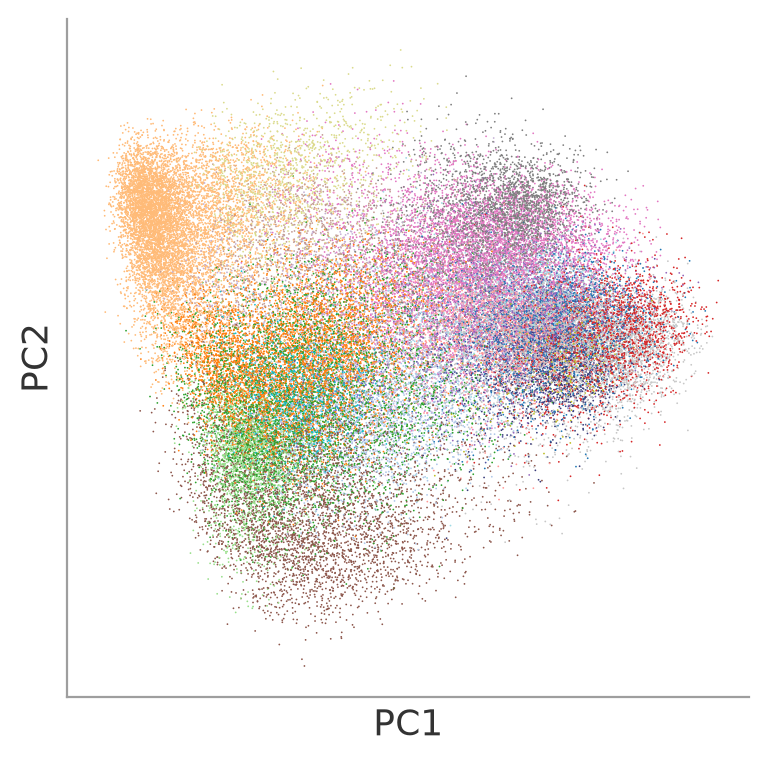
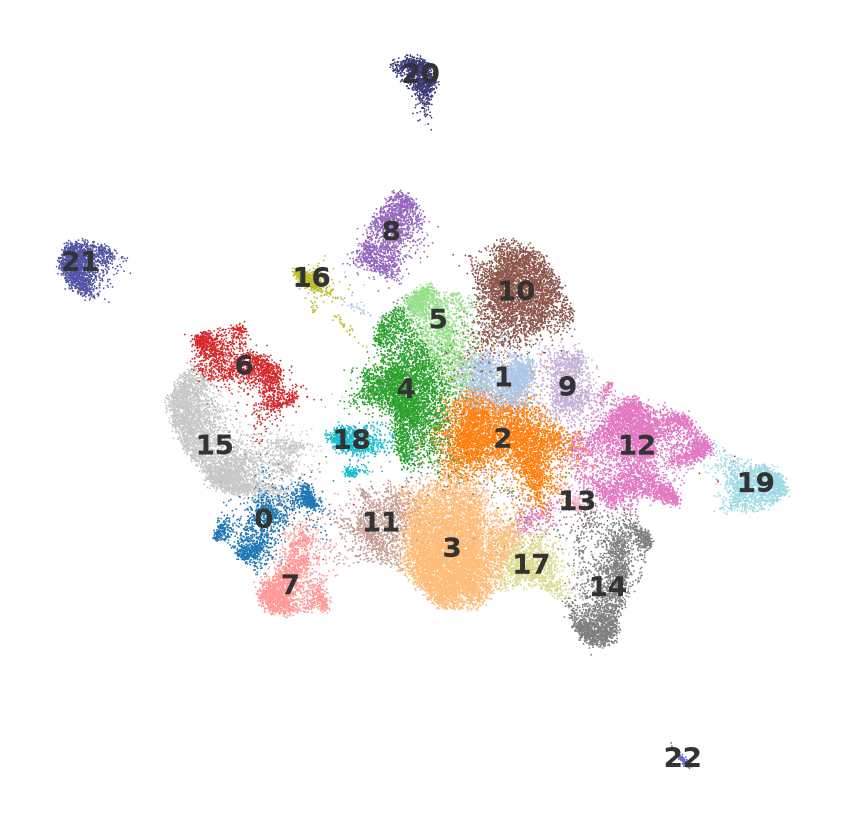

Reduce & cluster
From table to clusters, in four steps
Data
QC
Filter
Normalize
Cluster
Markers
INPUT
Normalized table
56,899 cells × 347 genes
STEP 1

PCA
347 genes → 50 main directions.
sc.pp.pca
STEP 2
Neighbour graph
Link each cell to its 15 most similar cells
sc.pp.neighbors
STEP 3
Leiden
Find groups with many links inside, few between. Groups are always connected.
sc.tl.leiden
STEP 4

UMAP
A 2D picture of the graph, for viewing only.
sc.tl.umap
Small panel: skip highly variable gene selection. The 347 genes were already chosen to be informative.
Unsupervised: no labels go in. Clusters are a hypothesis until markers and the tissue map support them.
PCA and UMAP: Practical 2 dataset, library-size normalized. Leiden guarantees connected communities: Traag, Waltman & van Eck, Sci Rep 2019. Graph panels: toy example.